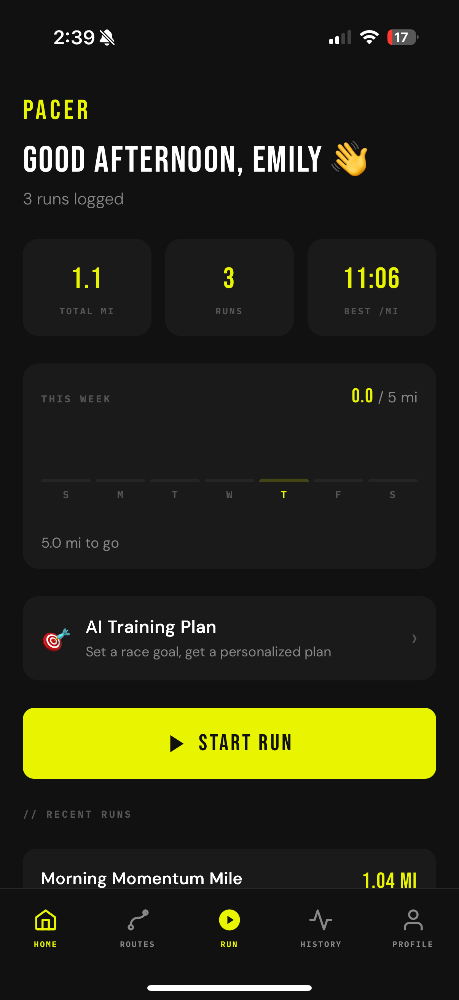
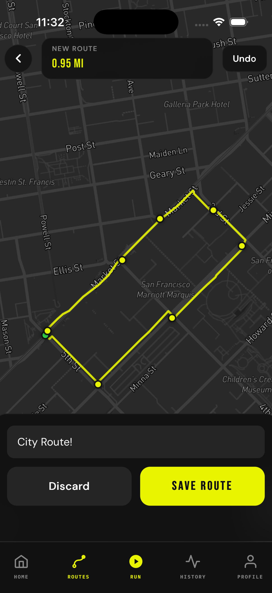
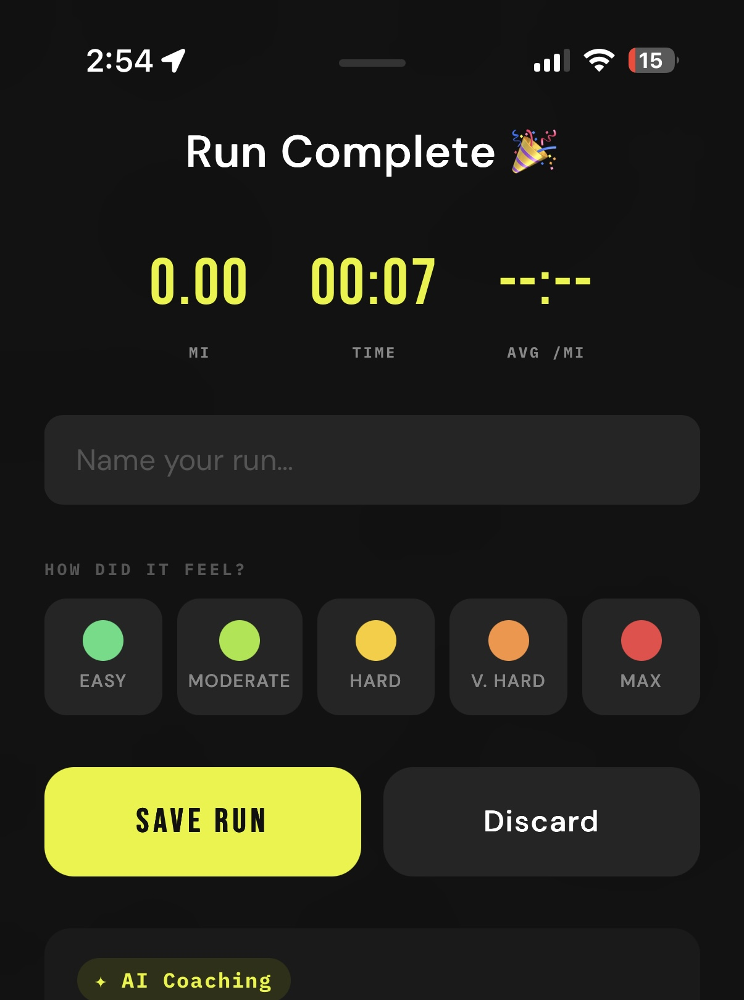
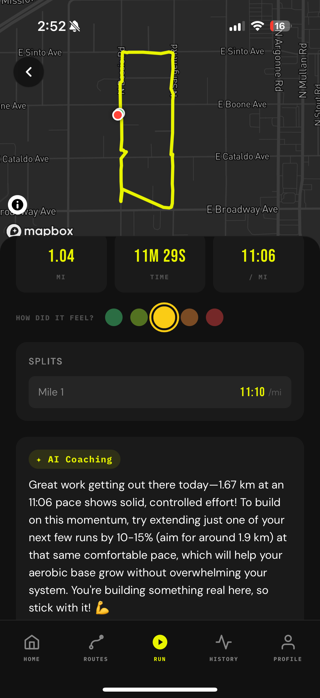
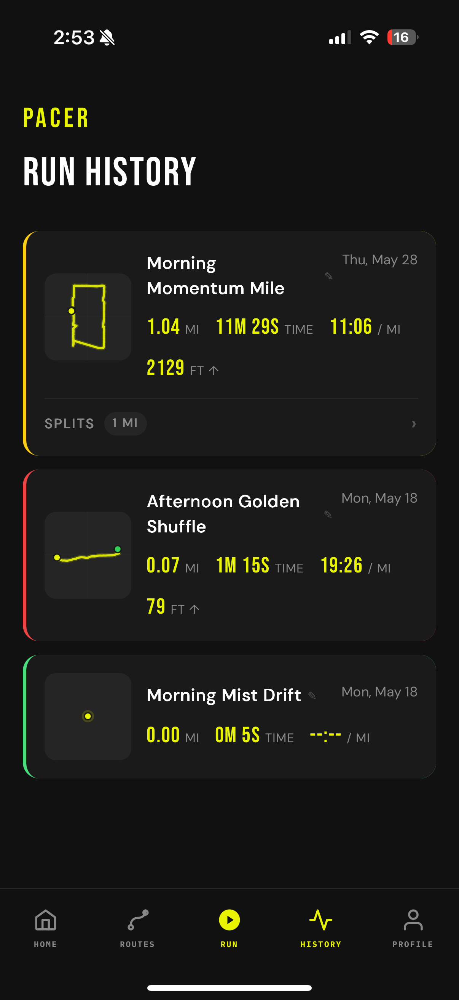
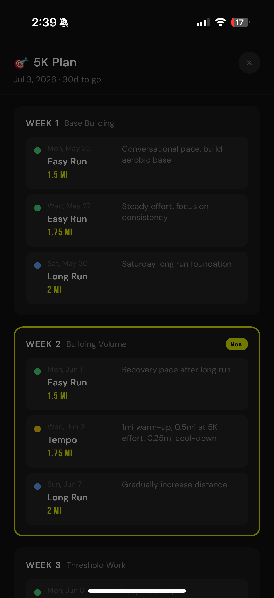
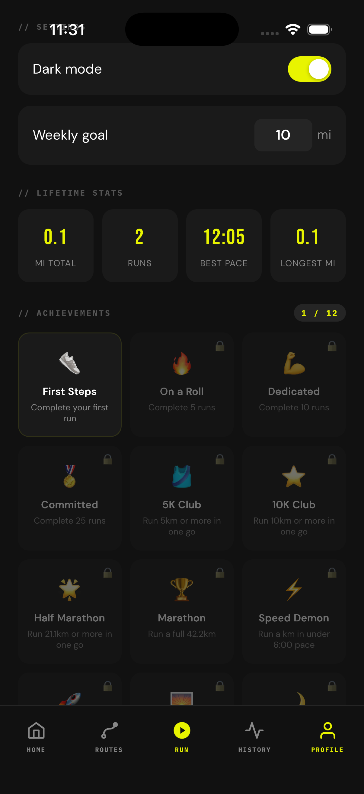

A subscription-free running companion. Route creation, AI coaching, and adaptive training plans built for runners who are tired of paying monthly for features that should just exist.

I kept planning my routes in Google Maps before every run because every running app I tried locked route creation behind a paywall. I hate subscription models. When I got the chance to build anything I wanted for a CS project, this was it.
How do I build a running app with no subscriptions and no stripped-down free tier, while still making it powerful enough to feel genuinely worth using?
Every design decision came from a frustration I'd actually felt. I wasn't guessing who I was building for. That made the research feel natural and the decisions feel obvious. When the problem is yours, you stop second-guessing.
I got rejected twice. Once for a missing camera permission key (NSCameraUsageDescription) and once for not having an account deletion flow. Both were researched, fixed, and resubmitted. These guidelines weren't just something I read. They came up in a real review.
Planned as a Progressive Web App to stay within realistic time constraints. No native tooling, no App Store. Just build and ship.
Claude introduced me to Capacitor, which made going native possible without rewriting everything from scratch. It slowed things down early on, but it unlocked the Watch app, HealthKit, and a much better product overall. Totally worth it.
My classmates thought I was being too ambitious. The moment the Mapbox map loaded with live GPS data, I knew it was going to work. That was the turning point.

The original effort rating used emojis (😴→💀) and it just felt too playful for what I was going for. I swapped it out for a color gradient, green for easy runs and red for max effort. It was a gut call, not user testing. Same function, completely different feel.

The early coaching responses were generic and honestly not that helpful. Adding the feel rating changed that. It feeds directly into the Claude prompt, so if you rated the run a 5 (max effort), the response focuses on recovery. A 1 means you probably have more in the tank.
First rejection was for a missing camera permission key. Second was for not having an account deletion option. I looked both up in the review guidelines, made the fixes, and resubmitted. Getting rejected is just part of shipping something real.
The coaching and training plan features don't fully connect yet, which is the next thing I want to tackle. Social features and nutrition tracking are on the list too. The app shipped. There's still more to build.
Claude introduced me to Capacitor, wrote the Swift files for the watchOS app, and figured out the native plugin architecture for the Watch bridge. Without it, this project would have been a lot smaller.
The WatchBridgePlugin (a custom Capacitor plugin that fires JS events to avoid Firebase linking errors in the Watch target) was designed and debugged with AI help. Same goes for the Firebase Cloud Functions powering all three AI features.
Training plans, AI coaching, and the Apple Watch app all would have been cut if I'd worked solo. The vision was always mine. AI just made the execution possible.
The first version gave generic running advice. I refined it with structured context about the run, a tone direction, and the feel rating. It re-fetches whenever you pick your feel rating, so the response actually matches how the run went.

Prompted with distance, pace, and time of day. The token limit is set to 20 to keep names short. They should sound like something you'd actually want to save.

Give it a race goal and a date, and it builds a full plan of up to 20 weeks from your recent run history. Every Monday, a second prompt looks at what you actually completed and how hard it felt, then adjusts the remaining weeks.


"AI is an incredible tool as long as you have a good vision. It made things possible that would have taken months on my own."
— Emily Herbert, Developer
The design system came straight from this portfolio: dark theme, Bebas Neue, and the #E8F400 accent. Applied to a running app, it ended up feeling clean and sporty. That was the vibe I was going for.
Biggest design decision: swapping the emoji ratings for a color scale. Emojis felt out of place in an app meant to feel focused and athletic. Changing that one thing shifted the whole tone.
I'm most proud of the visual design and the route creation feature, which is the reason I built this in the first place.
AI really does level the playing field. It helped me build things that would have taken months on my own. But the vision still has to come from you. Every call about what felt right, what needed to change, what to cut entirely — that was always mine.
The gap isn't technical anymore. It's knowing what you want to build and caring enough about it to make the right calls.